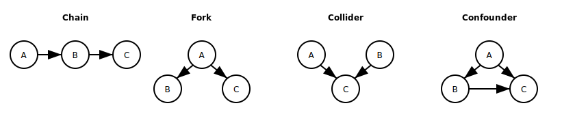
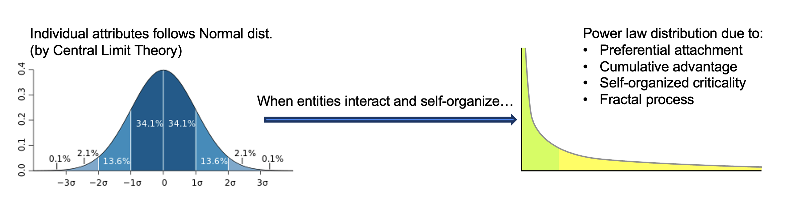
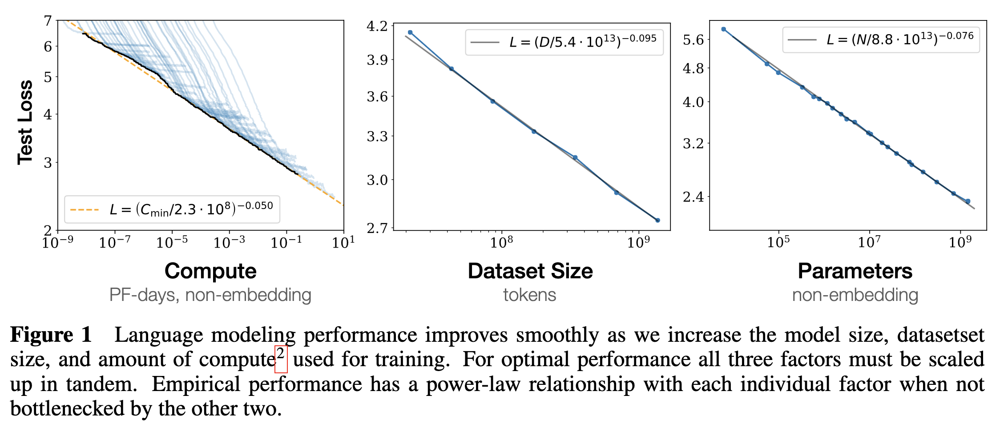

LLMs and their Fundamental Limitations (Part 1)
Abstract: Large Language Models (LLMs) are text-based generative models that aim to function as a World Model (WM) [1]. We begin with a definition of what we expect from a WM, then dive into two aspects. First, at a microscopic level, we discuss the operation of correctly encoding graphical structures into sentences. Such structures underlie our cognitive processes when we intend to describe relationships between concepts and entities, communicate causal inference, prediction, and common sense reasoning. We highlight the non-bijective nature of such encoding and its implications for learning. Second, at a macroscopic level, we argue that a well-learned LLM will align its generation distribution with the real-world data distribution that often follows a power law [2]. This alignment, bridged with Kolmogorov complexity [3], explains the empirical finding of the scaling law of language models [4]. Importantly, our analysis is not tied to any specific LLM implementation but applies broadly to text-based generative models aiming to capture world knowledge and reasoning. Part 2 will discuss how Transformer-based LLMs function as generative WMs, focusing on the key mechanisms that make them work. Finally, in Part 3, we will discuss the limitations of such models and the cautions that need to be exercised when applying them.
Introduction
What We Expect from a World Model
A World Model (WM) in the context of AI refers to an internal representation or understanding of how the world works that an AI system develops. When applied to a given context (e.g., "a child running on wet grass"), a WM can infer causal relationships ("wet grass is slippery"), make predictions ("the child might slip and fall"), and apply common sense reasoning ("an adult might warn the child to be careful").
These capabilities are generalizable, allowing the WM to transfer knowledge to new scenarios. For example, the principles learned from the "child running on wet grass" scenario can be applied to situations like "a novice skier on an icy slope" or "a person using a new smartphone for the first time." In each case, the WM adapts its understanding of unfamiliar conditions, potential risks, and appropriate cautionary responses.
Making a Text-Based World Model
A WM must store and retrieve a representation of interconnected facts, concepts, rules, and patterns across various domains. While this functionality shares similarities with encyclopedias and search engines, a WM's true value lies in its dynamic application of this knowledge. The core differentiators are its abilities to perform causal inference, make predictions, and apply common sense reasoning in contextually appropriate and generalizable ways.
Large Language Models (LLMs) can produce human-like sentences. However, the first challenge is not mimicking human language but faithfully communicating the meaning intended by the underlying cognitive processes. Secondly, well-learned LLMs should align their generation probabilities with the distributions observed in the real world. These two aspects are explored in the rest of this document:
- Firstly, we delve into the intricate process of converting complex graph-based information into coherent text. This involves understanding how LLMs can accurately encode and decode various graphical structures, such as causal relationships, into natural language sentences. Since there are different linearizations of the same graph, there are implications for the learning and reasoning capabilities of LLMs.
- Secondly, we address the alignment of LLMs' generative probabilities with the real-world distributions of information, often characterized by power law distributions. Such alignment ensures that LLMs can effectively replicate real-world scenarios, from common daily interactions to rare, complex events. By bridging this alignment with the concept of Kolmogorov complexity, we aim to explain how empirical scaling laws observed in language models can be understood.
From Graphs to Words: Understanding and Training LLMs in Cognitive Processes
The Graph-to-Words Operator
Converting “meaning” into a sequence of words is a complex process where the source of information is often a graph. In the context of causal inference, ground-truth causal graphs may be available, and the challenge is to accurately encode these graphs into a sequence of words.

Fundamental causal structures, often used as building blocks for more complex models, include:
- Chain: A → B → C. Sequential causation where A causes B, which then causes C.
- Fork: A → B, A → C. Common cause structure where A independently causes both B and C.
- Collider: A → C ← B. Two independent causes (A and B) both affect a common outcome (C).
- Confounder: A → B, A → C, B → C. A affects both B and C, while B also directly affects C.
- "A child's height is influenced by both parental genes and the child's nutrition."
- "Both the genes inherited from parents and the nutrition a child receives affect their height."
- "To determine a child's height, you need to consider both their parental genes and their nutrition."
The differences between expressing causal graphs in words versus programs lie in precision, interpretability, flexibility, and reusability. Words are more accessible and flexible for initial communication, while programs offer precise definitions suitable for implementation and automation.
Implications of Graphical Structures in Cognitive Processes for LLMs
The training corpus for Large Language Models (LLMs) includes a wide range of human-generated texts and programs. This dataset contains descriptions of individual facts, concepts, rules, patterns, and complex cognitive processes. These processes, from causal inference to predictions and common sense reasoning, are typically expressed as flattened versions of graphical structures. However, the presence of these elements in the training data does not guarantee their factual accuracy, logical soundness, or empirical correctness.
Causal graphs are just one type of graphical structure used to represent these cognitive processes. In addition to causal inference, graphical structures also represent relations between concepts and entities and other forms of reasoning, such as prediction models and common sense knowledge networks. These structures are vital for LLMs to understand and generate text that reflects human cognitive processes.
Multiple ways to linearize the same graphical structures lead to significant implications:
- Frequency Variations in Descriptions: Different descriptions of the same structure vary in frequency within the training corpus. Consequently, LLMs may have a weaker grasp of less frequent representations, leading to inconsistencies in understanding and generating causal relationships, predictive patterns, and common sense reasoning. This variability is linked to the “Reversal Curse,” where LLMs trained on "A is B" struggle with the reverse "B is A" even when logically equivalent [5].
- Compression and Information Preservation: Compressing text encodes the specific order of a particular linearization, making it impossible to decode the compressed information into a different sentence with the same meaning. Remembering all linearizations individually would be inefficient and risk information loss. Balancing compression efficiency with the preservation of semantic equivalence across different expressions of the same graphical structure is challenging.
Alignment of LLM's Generation Probability with Real-World Distributions
The goal of building Large Language Models (LLMs) is to develop a generative model that replicates the effects of our cognitive processes. For an LLM to be considered well-learned, it must evolve into a generative model whose generation probability aligns with the overall distributions observed in the real world.

Power Law Distribution in the World We Aim to Model
There are two fundamental distributions that describe our world:
- Normal Distribution: This characterizes variations in traits of individuals and entities, such as height, intelligence, expertise, and other biological or behavioral attributes.
- Power Law Distribution: This describes the distribution of phenomena that emerge when entities interact and self-organize, such as the size of cities, the popularity of websites, or the distribution of wealth [6].
- Preferential Attachment: Popular entities attract more connections, leading to skewed distributions, as seen in social networks.
- Self-Organized Criticality: Systems evolve into a critical state where minor events trigger significant cascades, such as in earthquakes or stock market crashes.
- Cumulative Advantage: Early advantages result in large long-term benefits, observable in scientific citations and social influence.
- Fractal Processes: Self-similar structures at different scales, like river branching or coastlines, also lead to power law distributions.
- Nature: The mass of celestial bodies follows a power law, with a few large entities like stars and planets and many smaller ones.
- Urban Development: City sizes exhibit this pattern, with a few large cities and many smaller towns.
- Economics: Wealth distribution follows a power law, where a small percentage of individuals control a large portion of wealth.
- Productivity: The "80-20 rule" applies to workplace productivity, where 20% of employees yield 80% of results.
- Business: A few companies dominate market share.
- Internet: Website traffic and social media influence are heavily skewed towards a few top sites and users.
Therefore, narratives about these entities will reflect the inherent complexity and thus similarly follow a power law distribution. Simple narratives, involving fewer entities and straightforward interactions, are more common. Complex narratives, which involve numerous entities and intricate interactions, are rarer. For example, the logistics of running a large company are much more complex than the daily chores of a household. Similarly, it takes scores of books to explain the logic (or lack thereof) behind conflicts at a national scale, whereas street skirmishes may fill only half a police report.
If the data we collect for training LLMs follows a power law distribution, the generative probability of well-learned LLMs is likely to follow a power law as well, reflecting the real-world scenarios that LLMs must navigate—from the most frequent and simple to the most exceptional and complex.
Empirical Evidence and Theoretical Insights into Scaling Laws
The scaling law for language models, as described in "Scaling Laws for Neural Language Models" by Kaplan et al. [4], and later in "Training Compute-Optimal Large Language Models" by Jordan Hoffmann et al. [7], reveals a robust empirical relationship between model performance and key factors such as model size, dataset size, and compute used for training. Specifically, model performance, typically measured by metrics like perplexity or accuracy on various tasks, improves as a power law function of these factors. This means that as we increase the model size, dataset size, or compute, the log of the error rate decreases linearly with the log of the increased factor.

(From "Scaling Laws for Neural Language Models" by Kaplan et al. [4])
This relationship holds remarkably consistently across different model architectures and a wide range of scales, from millions to hundreds of billions of parameters. Importantly, these laws suggest that performance continues to improve with scale, albeit with diminishing returns, and so far no clear upper bound has been observed.
While the underlying reasons for these scaling laws are not fully understood, the power law distribution in data and model behavior aligns well with the concept of Kolmogorov complexity [3]. This concept from information theory measures the complexity of an object (in this case, language patterns) by the length of the shortest computer program that can reproduce it. Two key intuitions emerge from this alignment:
- Power Law Distribution in Data and Kolmogorov Complexity: The power law distribution in the data corresponds to the spectrum of Kolmogorov complexity in language. Simple, frequent instances (like basic queries or daily interactions) have low Kolmogorov complexity—they can be described or generated by short programs. In contrast, complex cases (like intricate scientific problems or rare events) have high Kolmogorov complexity, requiring longer programs to describe or generate them.
- Generative Probability of Well-Learned LLMs: The generative probability of well-learned LLMs likely follows a power law, suggesting that the models are effectively learning to mirror the complexity distribution of the real-world scenarios they're trained on. As models scale up, they become better at generating both simple and increasingly complex outputs, reflecting the power law nature of the training data.
Understanding these scaling laws in LLMs requires a deeper investigation into the complexities of both the data and the models themselves. Two studies approach this from a complexity point of view:
- "TinyStories: How Small Can Language Models Be and Still Speak Coherent English?" [8]: The authors used GPT-3.5 to create a dataset of simple, short stories (50-200 words) for young children. The study found that models around 100M parameters performed consistently well, handling context and basic reasoning effectively. Smaller models, like those with 10M parameters, could still generate fluent and coherent stories, while even the smallest 1.5M parameter models showed some capability to produce simple, coherent text.
- "gzip Predicts Data-dependent Scaling Laws" [9]: The author generates synthetic data with various complexity using Probabilistic Context-Free Grammars (PCFG) and shows that the scaling law is sensitive to data complexity.
References
[1] Brown, T. B., et al. (2020). Language Models are Few-Shot Learners. arXiv preprint arXiv:2005.14165.
[2] Clauset, A., Shalizi, C. R., & Newman, M. E. (2009). Power-law distributions in empirical data. SIAM review, 51(4), 661-703.
[3] Vitányi, P. M., & Li, M. (1997). An Introduction to Kolmogorov Complexity and Its Applications. Springer.
[4] Kaplan, J., et al. (2020). Scaling Laws for Neural Language Models. arXiv preprint arXiv:2001.08361.
[5] Pearl, J. (2009). Causality: Models, Reasoning, and Inference. Cambridge University Press.
[6] Mitzenmacher, M. (2004). A brief history of generative models for power law and lognormal distributions. Internet Mathematics, 1(2), 226-251.
[7] Hoffmann, J., et al. (2022). Training Compute-Optimal Large Language Models. arXiv preprint arXiv:2203.15556.
[8] Eldan, R., & Li, B. (2023). TinyStories: How Small Can Language Models Be and Still Speak Coherent English? arXiv preprint arXiv:2305.07759.
[9] Karmin, G. (2023). gzip Predicts Data-dependent Scaling Laws. arXiv preprint arXiv:2405.16684.